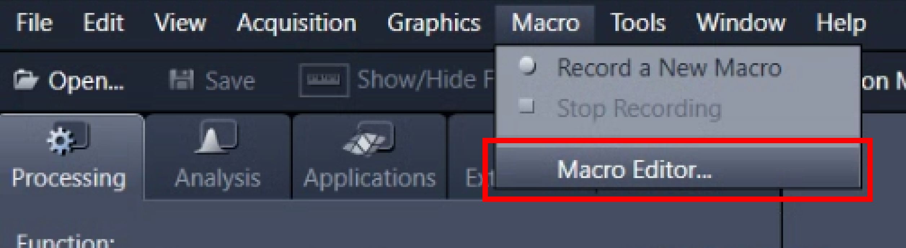

DySTrack on the Zeiss LSM980 (ZEN Blue)#
tl;dr
If you’ve done this many times before and just need a quick reminder:
Create target dir (on drive with enough free space)
Start DySTrack manager
conda activate dystrack python <path-to-config-file.py> <path-to-target-dir> [optional arguments]
Configure prescan and main scan experiment settings (
.czexpfiles)Open macro editor and adjust user inputs
Double-check that everything is ready, then launch
Ensure everything is running correctly
Before you start#
Ensure you have permission to use DySTrack on this microscope
Risk of damage
Modern microscopes are expensive machines, and automating them comes with an inherent risk of damage. Do not run DySTrack without permission from the microscope’s administrator, and always ask for help if you are unsure about something.
Confirm that DySTrack has been installed and tested
Otherwise, see Installation.
Confirm that a suitable image analysis pipeline for your experiment is available
See Available DySTrack pipelines for an overview of existing pipelines that come with the DySTrack repo. For information on how to develop your own custom pipeline (advanced), we recommend reviewing the Anatomy of DySTrack pipelines and Developing DySTrack pipelines sections.
Part 1: Start the DySTrack manager#
Important config details
Prescans on the 980 are generally saved in .czi format, so ensure
that file_end : ".czi" is set in the relevant config file (see step 3).
Tip
This works the same for all microscopes, regardless of manufacturer (aside from config details noted above).
Make a new target directory for your experiment
The DySTrack manager will monitor this directory, and experiment data will be saved there. Ensure the hard disk has sufficient free space and allows for sufficiently fast file writing for your use case.
Open a Minifoge prompt
Depending on how python was installed, you may instead need to open an “Anaconda Prompt” or a standard Windows command prompt.
Activate the environment in which DySTrack has been installed
Usually it is called
dystrack, so run:conda activate dystrack
Find/create the configuration file for your experiment
Config files are found in
DySTrack\runThey specify the image analysis pipeline to use
They can specify further parameters for the pipeline and the manager
To create a new config file, best copy an old one and modify it
Ensure that
file_startandfile_end(and where applicabletra_method) are set correctly
If you are a non-expert user, the configuration file for your type of experiment should be configured for/with you by a more experienced user and should not require further changes at runtime.
Additional information is found in the provided config files themselves.
Start the DySTrack manager session in your command prompt:
python <path-to-config-file.py> <path-to-target-dir> [optional arguments]
Tip
Instead of typing the entire file paths into the console, you can drag and drop the config file and the target directory into the console, which will automatically write out the full path.
If everything is configured correctly, you should see the following message:
DYSTRACK MANAGER SESSION STARTED! Monitoring target dir(s) for new files... Press <Esc> to terminate.
In addition, you should see a file called
dystrack_coords.txtappear in your target directory. The DySTrack manager will write detected coordinates to this file.
Part 2: Configure experiment settings#
The microscope and sample must be ready for this part.
Configure the main scan settings and save them as a
.czexpfileThe main scan produces the actual data of interest for the experiment.
It is usually a high-resolution, high-quality configuration using high pixel densities, multiple channels, and either AiryScan (8y mode) or confocal with averaging optimized for SNR. Use high/optimal z-resolution for stacks.
Important
Always tick
TilesandAutoSaveThe Focus Strategy must be set to
Use Z Values / Focus Surface Defined in TilesZ-stacks must be a range around the center and have the same center as the prescan.
Only set one position in tiles (F10 to add); this will be updated by the macro
Save the settings as a
.czexpfile.Side note: Main scan image data for a 3D time course can be quite large (esp. with AiryScan). Double-check that there is enough free disk space, i.e. roughly the size of a main scan stack times the number of samples (if multi-positioning) times the number of time points (plus some spare space for prescans and as a precaution to avoid slow-down of file writing).
Configure the prescan settings and save them as a
.czexpfileImportant
Unlike for the main scan, do not use AiryScan for the prescan.
The prescan is used for DySTrack to find coordinates.
To create a suitable prescan configuration, start with the main scan (unless it is AiryScan) and trade off resolution and SNR for speed to the greatest extent allowed by the image analysis pipeline. Remove any averaging, substantially reduce pixel density, use only a single channel, and trade off laser power for gain.
Use a (very) low z-resolution for the prescan and include 15-30% spare space outside your sample at the top and bottom (how much is needed depends on the sample and analysis pipeline).
Important
Always tick
TilesandAutoSaveThe Focus Strategy must be set to
Use Z Values / Focus Surface Defined in TilesZ-stacks must be a range around the center and have the same center as the main scan.
Set all desired sample positions in tiles (F10 to add position)
Save the setting as another
.czexpfile.
Part 3: Configure the ZEN Blue macro#
Open the ZEN Blue macro editor
If this option is not available, your ZEN Blue version is lacking the macro module. Speak to an expert user or facility staff, or get in touch with your Zeiss representative.
Open the DySTrack macro

LSM980_ZENBlue_macro.pyin themacrosfolder.Configure the settings in the
USER INPUTsectionprescan_name: name of prescan experiment settings from.czexpmenujob_name: name of main scan experiment settings from.czexpmenuoutput_folder: the target directory monitored by the DySTrack managermax_iterations: number of time pointsinterval_min: interval between time points in minutesFor the interval, calculate sufficient time for prescan, image analysis (usually quick), and main scan (usually the bottleneck). Multiply by the number of positions when using multi-positioning and add a bit of buffer time.
Tip
The macro works by taking all the initial positions set in the prescan into its memory and then clearing all positions to populate them back one by one as acquisition proceeds. This means if you stop the experiment after starting it (e.g. to tweak something), the previously marked initial positions will be gone. To recover them, click Reload in the prescan’s
.czexpmenu.Pause for a moment to mentally review whether everything is ready
Start the experiment by clicking
Run
{kind=link}
Troubleshooting
To stop the macro press
Stopin the macro editorIf there are problems with the macro editor, close and reopen it
If things don’t work for unknown reasons, try a full system restart
Part 4: Look after your experiment#
Monitor the microscope for the first few time points to ensure everything is working as intended.
A prescan should be rapidly acquired and saved in the target directory. The DySTrack command line should then report detection of the prescan, execution of the image analysis pipeline, and then pushing of new coordinates, which in turn should trigger the main scan and then the next position / time point.
Tip
It’s useful to configure remote access to the microscope PC to periodically check in on the experiment.
After the experiment:
The DySTrack manager can be stopped by pressing
Escin the command lineThe microscope software and hardware should be shut down as usual
The main scan images/stacks for each position and time point are saved as separate files.
Some advice on how to postprocess DySTrack data can be found here.
Be sure to (process and) move data to a different storage location asap to avoid filling up the scope PC’s disk drives